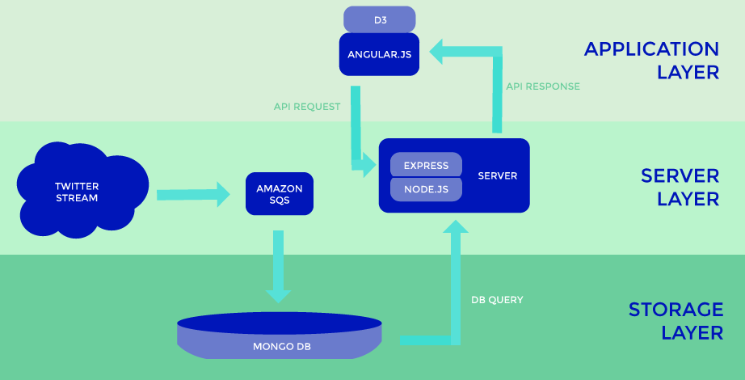

| Tweet | State | City | |
|---|---|---|---|
| {{ x.text }} | {{ x.state }} | {{ x.city }} | {{ x.sentiment }} |
| {{ x.text }} | {{ x.state }} | {{ x.city }} | {{ x.sentiment }} |
| {{ x.text }} | {{ x.state }} | {{ x.city }} | {{ x.sentiment }} |
| Tweet | State | City | |
|---|---|---|---|
| {{ x.text }} | {{ x.state }} | {{ x.city }} | {{ x.sentiment }} |
| {{ x.text }} | {{ x.state }} | {{ x.city }} | {{ x.sentiment }} |
| {{ x.text }} | {{ x.state }} | {{ x.city }} | {{ x.sentiment }} |
Total Tweets:{{count}}
Architecture Framework
Wow you actually care about our process, woohooo! Keep Reading! The challenge was simple: Real time sentiment analysis in addition to historical sentiment analysis based on key words. Simple enough, right?! Ehhh we found that when it comes to big data, we really need to think about what we’re doing... Click me to read more.
We started off with a model that goes as follows: A tweet collector module reads from a stream, writes to a local JSON file, and then uploads to our mongolabs database everyday. Oh how naïve we were. We quickly moved to the stream writing directly to the database, hindsight is 20-20 I guess.
We have data! Although we don’t need everything in the tweet, we only need a few attributes, and we need to add sentiment to it. Map-Reduce to the rescue! Or not… This was also stupid. It forced us to run batch jobs every so often to update our live data set. So we needed a way to make our application real-time, fast, and robust.
Kafka to the rescue, for real this time. This allowed us to cut out multiple reads and writes to the database. As new tweets came in, our consumers would clean the data and persist both a raw copy and a clean copy.
Okay, it looks like our backend data is working well! Or not… We were using kafka correctly, but we were not able to utilize the power that comes with it: clustering, replication, and fault tolerance. We were running the kafka instance on one node, with zero clustering.
Okay amazon SQS to the rescue FOR REAL this time. This was perfect. It would do the same thing as our kafka instance, but it would automatically cluster, replicate, and be fault tolerant. We feel confident about this.
Next was the front end. We decided to create a node.js server in order to create a database API that our frontend angular application could interact with. This was great at first, until we were requesting 100,000 tweets. Everything broke.
We decided that we would create API calls that would only load the tweets from the state that the user has clicked on. In addition it will only load 2000 tweets at a time. We used AJAX calls to achieve this.
We have this real time data, but we’re not showing it on the frontend. Nothing a little javascript magic can’t handle.
So that’s where the app is at now. Although we still have a lot we want to do.
1) Implement SOLR to improve search.
2) Make the front-end much prettier.
3) Get a better sentiment analysis.
Thanks for reading!
The Team
Josh Fermin
Computer Science

Josh is a junior. When coding he likes digging deep into the hardware of things.
Andrew Gordon
Computer Science
Andrew is a junior. When he isn't coding you can find him jammin' out on his dobro.